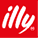

HELLO. こんにちは. Hola. 안녕하세요. Bonjour. Salve.
Nice to meet you. 반갑습니다. はじめまして. Piacere di conoscerla. Ravi de vous rencontrer.
I'm Kwon Minji. Mi chiamo Kwon Min-ji. 권민지입니다. Je suis Min Ji Kwon.
섬세하고 디테일을 중요시 하지만, 손이 빠르답니다.
유연함을 좋아하지만, 기본에 충실해요.
4Y 8M
실무 경력
19+
런칭 프로젝트
100%
일정 준수율
AI
실무 워크플로우 도입
/ 01 INTRODUCE
디테일은 끝까지, 속도는 가볍게. 시맨틱 마크업을 기본으로, 기획의도를 알잘딱! 해서 디자인부터 퍼블리싱까지 유연하게 완성해요.
저는 최근에
이런 업무를 했어요.
공식몰 UI 개선
상시 유지보수 및 구조 커스터마이징
공식몰 앱 런칭 F/U
/ 02 기여도 50% 이상
핵심 성과 TOP3를 알려드릴게요.

일리카페 정기구독 서비스 개발(2023.07 ~ 2023.09)
이탈리아 커피 브랜드 일리카페(ILLYCAFFÈ)의 기존 원두/캡슐 중심 구독 구조에 '머신+커피' 결합형 상품을 추가해 신규 고객 유입을 확대하고, 분산된 구독 경험을 하나의 기준으로 정리하는 것을 목표로 프로젝트를 진행했어요.
역할
- 1) 구독 전용 UI/UX 설계 및 구현
- 구독 상품 상세, 옵션 선택, 주기 설정, 결제 유도 영역 전체 구독 흐름 UI 구현
- 원두 1종 이상 선택 구조 고려해 사용자 기능 최적화
- (옵션 변경 반복 시 드롭다운 초기화 UX 제거, 마지막 선택값 유지 로직 적용 등)
- 2) CTA 활성화 조건 로직 설계 및 UX 오류 예방
- 옵션/수량 필수 선택 전 CTA 비활성 구조 개선
- 오클릭·0 이하 수량 입력 UX 리스크 사전 식별
- 3) QA 및 결제 신뢰도 핵심 이슈 해결
- 주요 브라우저, 디바이스 테스트 및 약관/결제/배송 문구 검수 수행
- 결제 단계 회차별 결제금액, 발송일, 할인율 불일치 이슈 특정 및 수정
성과
정기구독 신청 건수
0%
↑
런칭 일정 지연
10일
- '머신+커피' 결합형 신규 구독 상품군 안정적 론칭, 구독 UX 표준화 달성
하나은행 TRADE WATCH SYSTEM 업그레이드(2022.10 ~ 2022.11)
무역기반 이상거래 탐지 시스템 활용도 및 이해도 제고를 위한 UI/UX 고도화와 2022년 11월 내 시안 완료 및 프로젝트 일정 준수를 목표로 프로젝트를 진행했어요.
역할
- 1) 현업 피드백 조율 및 UI 방향성 설계
- 화면설계서 기반 사전 UI 레퍼런스 시안 3종 제작, 현업 선택안 중심 진행
- 하나은행 Primary Color 중심 컬러 체계 수립 및 정보 우선순위 설계
- 2) TBML 기반 이상거래 데이터 시각화 구조 설계
- 거래당사자, 경로, 규정, 제재 데이터 4종 교차 인지
- 1차 경보, 2차 맥락, 3차 검증 액션 시선 계층 그룹핑
- 3) 대규모 정보구조 최적화 및 조회 효율 개선
- 12,000개 이상 품목 코드 및 다단 카테고리를 요약/결과/상세 3단 구조로 재구성
- 검색 필터(거래/상대방/국가/제재/기간) 그룹화 및 프리셋화
- 4) 실시간 모니터링 UX 강화
- 실시간 데이터 유입 시 화면 단절 방지를 위한 배지형 알림 영역 추가
- 의심건 발견 → 상세 확인 → 조치 플로우 연결로 실무 전환률 강화
성과
반복 조회 대기 시간
0%
↓
납기 지연
0일
BIGK 플랫폼 웹사이트 구축(2021.11)
블록체인 기반 신규 서비스 신뢰도 강화 웹사이트 구축과 블록체인 서비스 특성 톤 앤 매너 반영 구현을 목표로 프로젝트를 진행했어요.
역할
- 1) WordPress 기반 화면 구조 설계 및 구현
- 무료 템플릿 구조 활용, PHP 대규모 수정 없이 테마 옵션/위젯/CSS 중심 구현
- 이미지 리소스 용량 200KB 이하 관리, 성능 및 가독성 균형 유지
- 2) 브랜드 아이덴티티 반영 및 정보 전달 구조 설계
- 히어로 → 다이어그램 → 화이트페이퍼 → 문의 CTA 흐름으로 핵심 메시지 직관화
- 블록체인 특성 고려 기술 다이어그램, 프로세스 중심 톤 앤 매너 구성
- 3) 가이드 정리
- 이미지 규격, 권장 용량, 교체 위치 문서화
- 비개발 실무자 직접 운영 가능 지원
성과
분기당 운영 요청
1건
한·영 사이트 동시 오픈
2L
- 2021년 11월 내 한/영 공식 사이트 오픈, 이후 업데이트 요청 분기당 약 1건 수준 유지
/ 03 AI WORKFLOW
반복은 AI에게, 디테일과 판단은 제가.
생성형 AI를 실무 파이프라인 안에 녹여서, 같은 시간에 더 정교한 결과를 만들어요.
코드 · 마크업 · QA · 비주얼 리소스까지, 도구로 다루되 마무리는 직접 책임집니다.
코드 가속화
Cursor · Claude 페어 프로그래밍으로 반복 컴포넌트·유틸리티 초안 확보 후 시맨틱·접근성 직접 리팩토링
시안 → 마크업
디자인 시안 분석으로 마크업 구조 초안 도출, W3C 권장 사양 맞춰 직접 재구성
AI 이미지 ·
비주얼 생성
프로토타입용 더미 이미지, 키비주얼 시안, 캠페인 무드보드를 빠르게 확보. 톤·해상도·라이선스 검수까지.
QA · 검수 · 문서화
크로스브라우저 이슈 진단, 접근성 체크리스트, 다국어 문구 1차 검수, 핸드오프 노트 자동 정리
— AI VISUAL SAMPLES
실무 단계별로 이렇게 활용해요.
기획·디자인 협의 전 단계에서 빠르게 시안을 확보하거나,
최종 단계에서 부족한 보조 비주얼을 채우는 용도로 사용합니다.
/ 04 실행으로 증명할게요!
이런업무는 저에게 맡겨주세요.
#HTML5
시맨틱 마크업 기반의 구조 설계
및 접근성 고려한 구현
#CSS3
반응형 레이아웃, FLEX/GRID
활용 및 크로스브라우저 대응
#JAVASCRIPT
UI 제어 및 사용자
인터랙션 로직 구현
#JQUERY
DOM 제어 및 이벤트 기반
인터랙션 구현
#웹 표준
W3C 권장 사양 준수
마크업 구조 설계
#웹 접근성
키보드 접근, 대체 텍스트 등
기본 접근성 요소 적용
#반응형 웹
PC/MOBILE 환경 대응
레이아웃 설계 및 구현
#브라우저 호환성
CHROME, EDGE, FIREFOX,
WHALE 등 주요 브라우저 대응
#웹 사이트 모니터링
운영 이슈 파악 및 기능,
화면 개선 제안
#UI/UX 개선
운영 데이터 및 사용성 관점 개선
포인트 도출/반영
/ 06 LET'S TALK